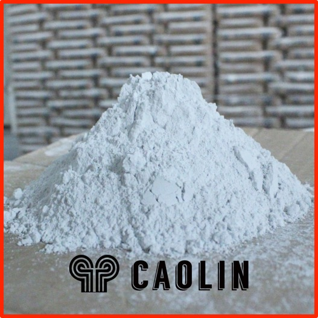
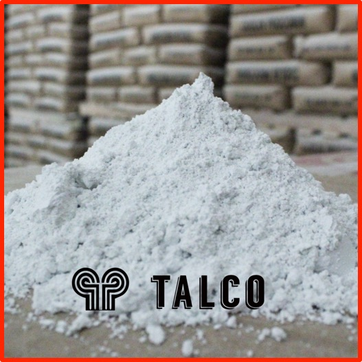
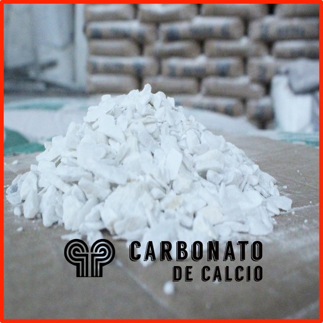
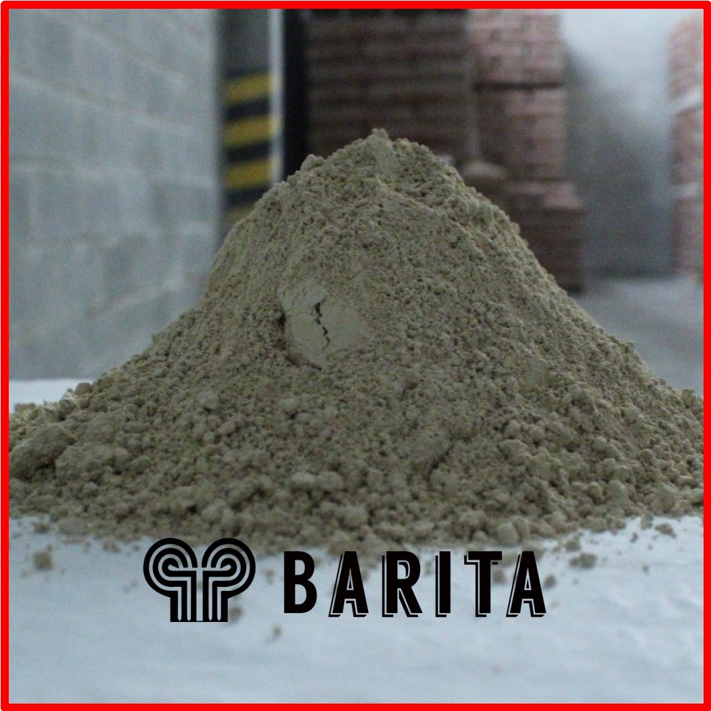

Nosotros
La micropulverización y beneficio de carbonato de calcio natural por vía seca fue en primera instancia la principal actividad industrial de la compañía. En la actualidad dichas operaciones se han extendido a minerales de origen no metálico tan diversos como baritas, talcos y caolines , gracias a la permanente innovación del proceso para responder a las necesidades del mercado. Los productos son usados en gran cantidad de industrias y empresas, las cuales han podido comprobar nuestros principios de satisfacción integral al cliente:
Contáctenos
Para mas información
Productos

Caolin
Caolines blancos y de tonalidad beige son procesados por Procomin, mejorando sus propiedades físicas y en grados de finura de hasta 28 micrones para ser usados en las industrias de pinturas y de cerámica.
Talco
Procomin procesa silicatos de magnesio, de color Beige en tamaño de partícula de 32 micrones de excelentes propiedades físico-químicas que los hacen apropiados para ser usados como extender en la industria de pinturas.
Carbonato de Calcio
Nuestros carbonatos de calcio son procesados en diferentes granulometrias , desde malla 3 hasta malla 600 en la escala de tamices tyler ASTM E 11-87, de blancura Extrema, Normal y Grises, dependiendo la industria en la que vayan a ser utilizados.
Barita
La barita es un mineral utilizado en aplicaciones industriales como en la perforación de pozos petroleros y en la fabricación de pinturas y plásticos.Contacto
Hable con nosotros
Carretera Nacional de Occidente Km 26
Via Madrid-Faca
Cundinamarca
comercial@procomin.co
+57 314 442 6449